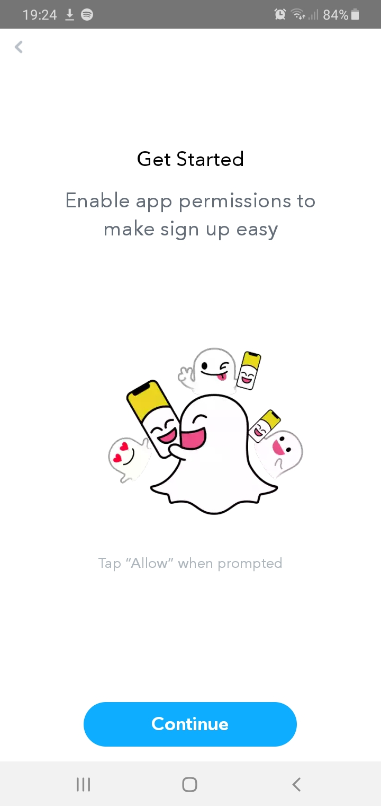
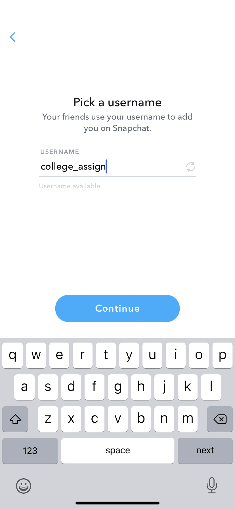
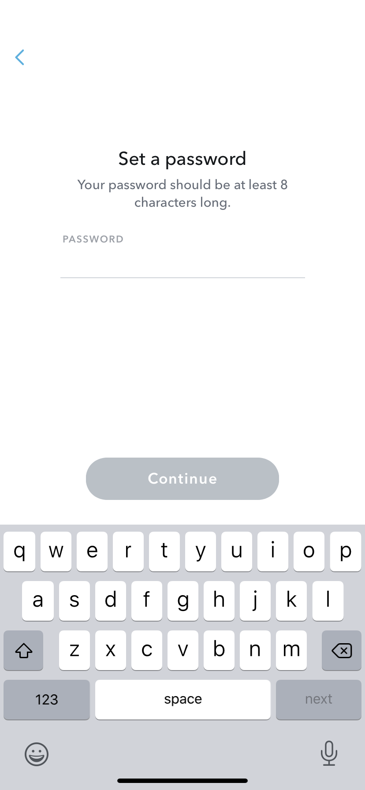
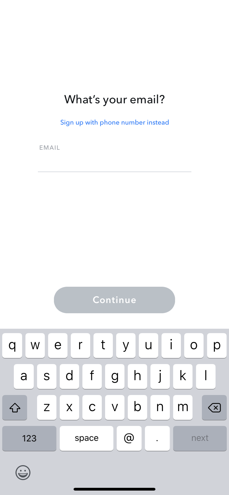
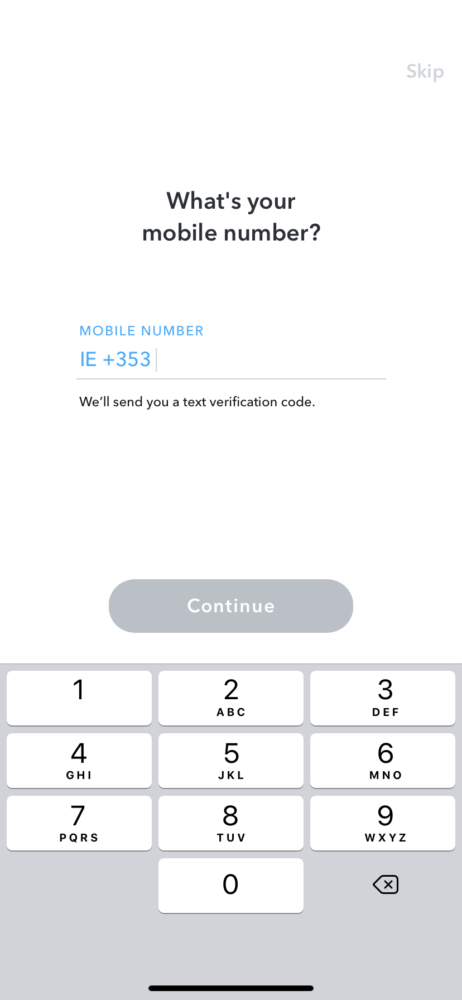

Introduction
Snapchat is an app that is available on the app store (apple) and the google play store (android). It is a simple app. Once you download it and make an account it is amazing what you can do! You can send and receive videos and photos from your ‘friends’ once you have added them. You can also post to your ‘story’ which is something that all your friends can see. It is kind of like posting a status on Facebook or tweeting on Twitter. You can block certain people from seeing it. You can also make a ‘Private’ story which is one where you are in control of who you add to see the story. There are also public stories on snapchat and shows. From MTV to Beauty Insider, you can watch different mini shows or read articles. You can subscribe to certain mini shows or even news stories, so you never miss one! You can also chat to people without sending a video or picture, just like texting. There are also group-chats on the app in which you can have all your friends in one spot to text or snapchat.
Registration
You can download snapchat on most phones; it doesn’t allow you to download it on computers only phones. It is actually very easy to register/join the app Snapchat! Below are the steps to do so:
1. In order to register for Snapchat, you need to download the app from the app/play store.
2. Once downloaded you it gives you the option to sign in or sign up, as you need to create an account to use the app.

3. When you click sign up, it then asks you for your name.

4. It then asks for your birthday. The app is for anyone aged 13+ so they ask for your age in order to see if you’re over 13.

5. Once you’ve put in your age it then asks you to select your username it generates some for you or you can pick your own.

6. Next is the password selection. It has to be more than eight characters long.

7. You then need to add your email and then it asks for your mobile number, this isn’t a required step, but it is better to add your phone number.

8. It then asks if you want to find friends by syncing your contacts, you can skip this step and do it later if you want.

9.Then that’s it, you are signed up for Snapchat!